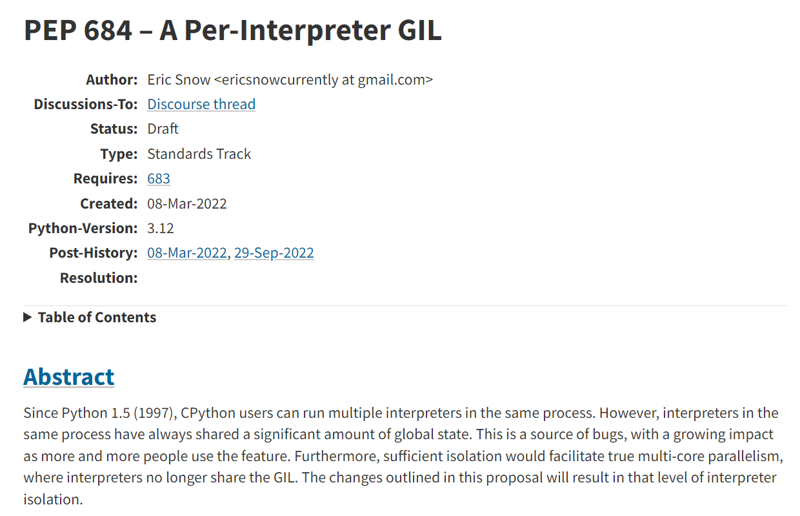

基础概念
- CPU的分时复用
目前我们普遍使用多核CPU，可以多核同时执行多个任务，但是即使是单核时代，计算机也是可以同时执行多个任务的，其原理是操作系统轮流让各个任务交替执行，即分时复用。由于计算机运算速度较快，所以即使是每个任务只能间歇运算，也基本可以满足使用要求。
- 进程
进程是对运行程序的封装，是系统进行资源调度和分配的的基本单位，用以实现操作系统的并发。进程在执行过程中拥有独立的内存单元，且不同进程间不会相互影响，适应于多核、多机分布运行。
- 系统开销：由于在创建或撤消进程时，系统都要为之分配或回收资源，如内存空间、I／o设备等。因此，操作系统所付出的开销将显著地大于在创建或撤消线程时的开销。类似地，在进行进程切换时，涉及到整个当前进程CPU环境的保存以及新被调度运行的进程的CPU环境的设置。
- 通信：进程间通信主要包括管道、系统IPC（包括消息队列、信号量、信号、共享内存等）、以及套接字socket。
- 线程
线程是进程的子任务，是CPU调度和分派的基本单位，用于保证程序的实时性，实现进程内部的并发。每个线程都独自占用一个虚拟处理器：独自的寄存器组，指令计数器和处理器状态。每个线程完成不同的任务，但是共享进程的资源。
- 系统开销：线程切换只须保存和设置少量寄存器的内容，并不涉及存储器管理方面的操作。可见，进程切换的开销也远大于线程切换的开销。
- 通信：由于同一进程中的多个线程具有相同的地址空间，致使它们之间的同步和通信的实现，也变得比较容易。进程间通信IPC，线程间可以直接读写进程数据段（如全局变量）来进行通信——需要进程同步和互斥手段的辅助，以保证数据的一致性。在有的系统中，线程的切换、同步和通信都无须操作系统内核的干预。
Python如何同时执行多任务
有三种解决方案：
启动多个进程，每个进程虽然只有一个线程，但多个进程可以一块执行多个任务。
启动一个进程，在一个进程内启动多个线程，这样，多个线程也可以一块执行多个任务。
启动多个进程，每个进程再启动多个线程，这样同时执行的任务就更多了，当然这种模型更复杂，实际很少采用。
多线程和多进程最大的不同在于，多进程中，同一个变量，各自有一份拷贝存在于每个进程中，互不影响，而多线程中，所有变量都由所有线程共享，所以，任何一个变量都可以被任何一个线程修改，因此，线程之间共享数据最大的危险在于多个线程同时改一个变量，把内容给改乱了。
Python既支持多进程，又支持多线程，下面讲解一下如何实现Python多任务编程。
多进程
Unix/Linux操作系统提供了一个fork()系统调用，调用之后操作系统自动从父进程复制出来一份子进程。
由于Windows没有fork调用，所以Python提供了一套跨平台的多进程支持：multiprocessing，该模块提供了一个Process类来代表一个进程对象，在父进程执行过程中，只需要调用Process(target, args)就可以生成一个子进程，子进程可以用start()方法启动，并且提供了join()方法用来使父进程等待子进程结束后再继续往下运行，通常用于进程间的同步。
我们最常用的应该是multiprocessing提供的Pool进程池，直接生成多个子进程来执行同一个任务，比如大批量文件处理等。一般来说，设置进程数目为os.cpu_count()比较合适，可以使每个核都运行一个进程。
为实现进程间的通信，multiprocessing包装了一些底层的机制，提供了Queue、Pipes等多种方式来交换数据。以Queue为例，可以在父进程中创建两个子进程，一个往Queue里写数据，一个从Queue里读数据
1 | from multiprocessing import Process, Queue |
在Unix/Linux下，multiprocessing模块封装了fork()调用，使我们不需要关注fork()的细节。由于Windows没有fork调用，因此，multiprocessing需要“模拟”出fork的效果，父进程所有Python对象都必须通过pickle序列化再传到子进程去，所有，如果multiprocessing在Windows下调用失败了，要先考虑是不是pickle失败了。
多线程
Python的标准库提供了两个模块：_thread和threading，_thread是低级模块，threading是高级模块，对_thread进行了封装。绝大多数情况下，我们只需要使用threading这个高级模块。
启动一个线程就是把一个函数传入并创建Thread实例，然后调用start()开始执行：
1 | import threading, multiprocessing |
支持多线程，但不完全支持
python使用多线程只能用到CPU的一个核心，因为Python的线程虽然是真正的线程，但解释器执行代码时，有一个GIL锁：Global Interpreter Lock， 任何Python线程执行前，必须先获得GIL锁，然后，每执行100条字节码，解释器就自动释放GIL锁，让别的线程有机会执行。这个GIL全局锁实际上把所有线程的执行代码都给上了锁，所以，多线程在Python中只能交替执行，即使100个线程跑在100核CPU上，也只能用到1个核。所以，在Python中，可以使用多线程，但不要指望能有效利用多核。
一般来说，python多线程对IO密集型任务比较友好，因为IO等待期间可以自动切换到其他线程，不浪费CPU资源，从而提升程序执行效率。但是对于CPU密集型任务则很不友好，甚至效率会低于单线程，因为python会在切换线程上浪费很多时间。
下面的程序很直观的展示出单线程、多线程和多进程的运行效率区别：
1 | import time |
可以看出，当单线程耗时6秒时，多线程耗时17秒！几乎3倍的时间！而多进程时间仅为1秒！
Python并行多线程的进展
Python的核心开发者会不定期对外公示PEP（Python Enhancement Proposals），作为review之后得到公认的开发提案，其官网为：https://www.python.org/dev/peps/。CPython的核心开发大佬Eric Snow于今年3月8日提出了PEP-684，简单明了的指出了要在Python3.12版本为每个子解释器维护一个GIL：

由于GIL控制着全局状态的访问，导致同一进程下的多个线程只能分时复用计算资源。所以PEP-684提出一个解决方案，保证所有的全局状态是线程安全的，并未每个子解释器维护一个GIL，从而保证了多个线程可以安全且并行地使用计算资源。
在刚刚过去的9月份，Eric Snow在https://discuss.python.org/t/pep-684-a-per-interpreter-gil/19583 向大家公示了PEP-684的一些最新讨论结果，虽然该提案目前仍处在draft阶段，但毕竟是有了眉目。
不妨一起期待Python3.12的发布！